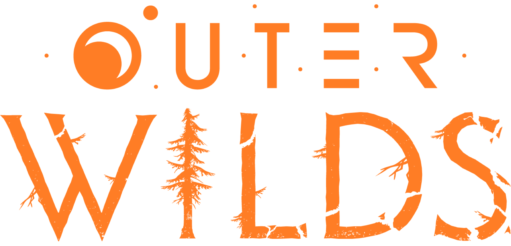

Serviços adicionais relacionados ao jogo Outer Wilds Além da experiência principal, Outer Wilds conta com conteúdos e recursos adicionais que ampliam a exploração e aprofundam a narrativa do jogo. O principal conteúdo extra é a DLC Echoes of the Eye, que adiciona uma nova região ao sistema solar, novos mistérios, mecânicas inéditas e uma história paralela que se integra aos acontecimentos da campanha principal. A expansão mantém o foco na exploração, na resolução de enigmas e na descoberta por meio da curiosidade do jogador, oferecendo diversas horas de conteúdo adicional sem alterar a essência do jogo. Outro serviço importante é o suporte contínuo por meio de atualizações, que corrige erros, melhora o desempenho e aprimora aspectos da jogabilidade. Essas atualizações ajudam a garantir uma experiência mais estável e agradável para jogadores em diferentes plataformas. O jogo também oferece integração com serviços das plataformas digitais, como conquistas (achievements/troféus), salvamento na nuvem (cloud save) e sincronização de progresso em plataformas compatíveis. Esses recursos permitem que os jogadores acompanhem sua evolução e mantenham seus dados protegidos. Além disso, Outer Wilds conta com uma comunidade ativa que produz guias, teorias, análises e conteúdos educativos, enriquecendo a experiência após a conclusão da campanha. Embora esses materiais não façam parte do jogo oficial, eles ajudam os jogadores a compreender melhor a história, os personagens e os diversos mistérios presentes no universo do jogo. Por fim, o jogo pode receber promoções sazonais em lojas digitais e participar de serviços de assinatura de jogos, dependendo da plataforma e do período, permitindo que novos jogadores tenham acesso à experiência por um custo reduzido ou como parte de um catálogo de assinatura.